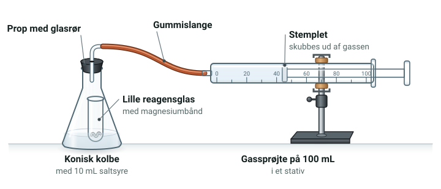

Modul 6 · Kemi › Modulplan › Øvelsesvejledning
Øvelse: Hydrogen i gassprøjten
I modul 2 målte I gaskonstanten, men den blev lidt for stor. I modul 5 fandt I ud af hvorfor: Gassen i sprøjten indeholder vanddamp. Nu måler I selv så præcist, at vanddampen kan ses. Magnesium reagerer med saltsyre og danner hydrogen, som skubber stemplet i en gassprøjte ud. Når I kender stofmængden, trykket og temperaturen, kan I beregne R med idealgasligningen.
Mg(s) + 2 HCl(aq) → MgCl₂(aq) + H₂(g)
Apparatur og kemikalier: gassprøjte på 100 mL i stativ, 100 mL konisk kolbe, prop med glasrør og gummislange, et lille reagensglas, der kan stå i kolben, magnesiumbånd, 2 M saltsyre (10 mL pr. måling), termometer, saks, vægt med tre decimaler og dagens lufttryk (barometer eller DMI).
Sikkerhed: Brug sikkerhedsbriller. Saltsyre irriterer hud og øjne: skyl straks med meget vand. Hydrogen er brandbart, så der må ikke være åben ild i nærheden.

Fremgangsmåde
- Tjek, at stemplet glider let, og skub det helt i bund.
- Klip 4–6 cm magnesiumbånd, vej det, og rul det sammen i det lille reagensglas.
- Hæld 10 mL saltsyre i kolben. Stil forsigtigt reagensglasset ned i kolben, så syren ikke når magnesiummet.
- Sæt proppen i, og aflæs sprøjtens startvolumen.
- Vip kolben, så syren løber ned til magnesiummet. Sving kolben forsigtigt, til der ikke kommer flere bobler.
- Vent, til volumenet ikke ændrer sig mere (ca. 5 min). Gassen er varm lige efter reaktionen. Aflæs slutvolumen og temperaturen i lokalet.
- Hæld indholdet i den beholder, din lærer viser. Skyl kolben, og gentag med et nyt stykke bånd. Lav tre målinger.
Det skal I aflevere
AFør forsøgetLektie
Beregn stofmængden af 0,050 g magnesium.
Beregn volumenet af den hydrogen, der dannes ved 20 °C og 1,013 bar.
Hjælp
Der dannes lige så mange mol hydrogen som magnesium. Isolér V i idealgasligningen.
Gassprøjten rummer 100 mL, og 1 cm magnesiumbånd vejer ca. 0,01 g. Hvor langt et stykke bånd kan I højst bruge?
BResultater
| Måling | m(Mg) i g | Startvolumen i mL | Slutvolumen i mL | V(H₂) i mL |
|---|---|---|---|---|
| 1 | ||||
| 2 | ||||
| 3 |
Temperatur i lokalet: °C Lufttryk: bar
Efterbehandling
CEfterbehandling
Regn først på måling 1.
Regn temperaturen om til kelvin og volumenet om til liter.
Beregn stofmængden af hydrogen. Der dannes ét H₂ for hvert Mg.
Beregn R med lufttrykket. Isolér R i idealgasligningen, og skriv formlen først.
Ret for vanddampen. Find vands damptryk ved jeres temperatur, og beregn hydrogenets partialtryk og R igen.
| t i °C | 16 | 18 | 20 | 21 | 22 | 24 | 25 |
|---|---|---|---|---|---|---|---|
| p(H₂O) i bar | 0,018 | 0,021 | 0,023 | 0,025 | 0,026 | 0,030 | 0,032 |
Regn de to andre målinger på samme måde, og udfyld skemaet.
| Måling | R med lufttrykket | R med p(H₂) |
|---|---|---|
| 1 | ||
| 2 | ||
| 3 | ||
| Gennemsnit |
Hvor mange procent afviger gennemsnittet med p(H₂) fra tabelværdien 0,0831 L · bar/(mol · K)? Hjalp rettelsen for vanddampen?
Sæt ring om:
Hvad gør de to fejlkilder ved R? Begrund kort.
| Fejlkilde | Hvad sker der med R? | Begrundelse |
|---|---|---|
| Der er et lag oxid på magnesiumbåndet | ||
| Gassen var stadig varm, da I aflæste |
CEfterbehandling
Skriv svarene på computeren, og vis én beregning helt med formel, tal og enheder.
| t i °C | 16 | 18 | 20 | 21 | 22 | 24 | 25 |
|---|---|---|---|---|---|---|---|
| p(H₂O) i bar | 0,018 | 0,021 | 0,023 | 0,025 | 0,026 | 0,030 | 0,032 |
Beregn R for hver måling, både med lufttrykket og med hydrogenets partialtryk p(H₂) = p − p(H₂O).
Beregn gennemsnittene, og sammenlign med tabelværdien 0,0831 L · bar/(mol · K). Hjalp rettelsen for vanddampen?
Hvilken fejlkilde er størst? Beregn fx, hvor mange procent af båndet der skulle være magnesiumoxid, eller hvor mange grader for varm gassen skulle være, for at forklare jeres afvigelse.
Beregn molarmassen af magnesium ud fra jeres målinger med R = 0,0831 L · bar/(mol · K), og sammenlign med det periodiske system.
Aflæste I volumenet hvert minut efter reaktionen? Forklar med idealgasligningen, hvorfor volumenet blev mindre, og hvor længe man skal vente.